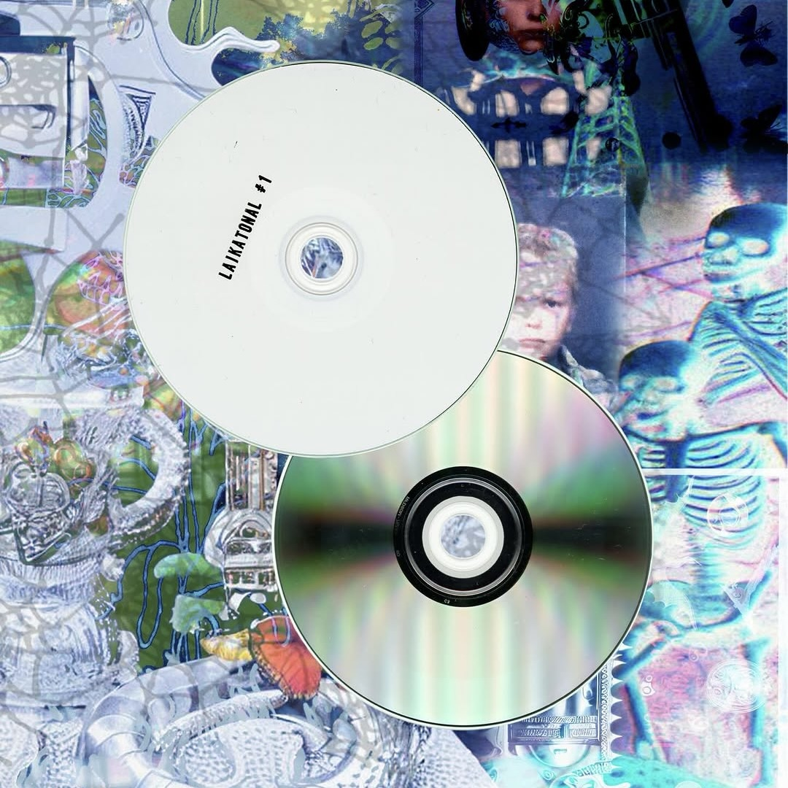
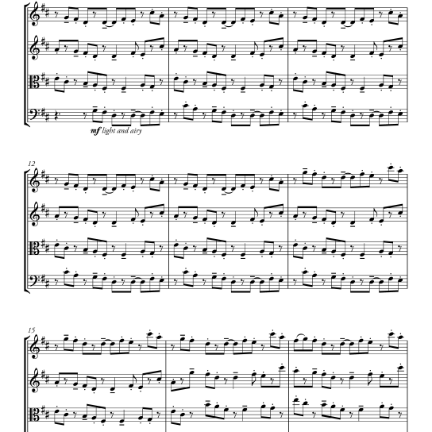

Wilma Hultén
Music
Dates
About

Laikatonal #1
XKatedral - Anthology Series II
Elif Yalvaç - My Heart of Noise

Scores
Mina kammare
on carewaves #15 – Radio Kapital (at 32:00)
Elsewhere
on On Air - On Site 2026
Graphic scores published in Paletten no. 342, text by Amina Hocine
Elsewhere
on Radiophrenia 2025
I träda
on Sebastien Forrester: Afraa with Amina Hocine on Rinse FM (at 12:40)
I träda
on Mutant Radio: Selectors Block Amina Hocine (at 29:00)
Intertia
on Skylab | No Rain, No Flowers | Sarah McCauley guest mix (at 15:52)
Inertia
on NTS Mix XKATEDRAL W/ LINUS HILLBORG & THEODOR KENTROS (at 36:27)
Mini interview on Svensk Musik (in Swedish)
String quartet
Everred
performed at UNM 2022
Hettan
for Stockholm Saxophone Quartet
Recorded live electronics set – Fylkingen
Algorithmic piece
Inert Mass
for Chronopolis / Cashmere Radio